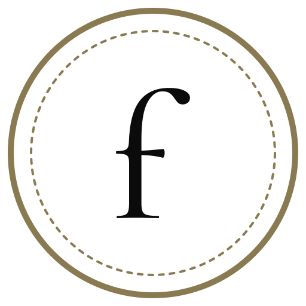
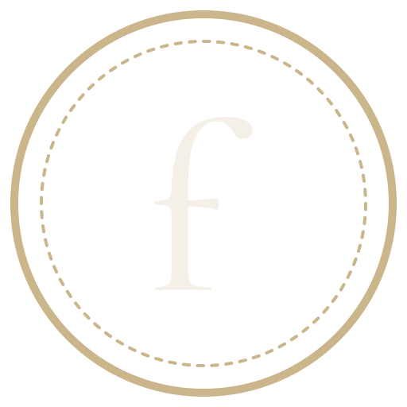
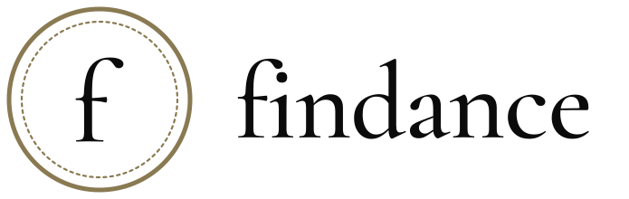
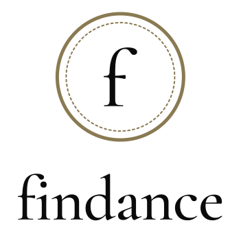
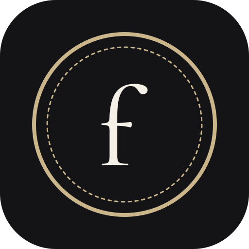

Quiet luxury for personal finance. Obsidian, precise, hushed. Gold is treated like gold leaf — an edge, never a fill. When in doubt, remove something.

monogram · light surface
monogram · dark surface
lockup · horizontal
lockup · horizontal · dark
lockup · stacked
lockup · stacked · dark
app icon · matte onyxNever pure #000 or #FFF. Champagne ≤ 5% of any screen; on light surfaces use the darker foil #8A7A52. Dark surfaces carry a 0.04-opacity grain for the matte finish.
Instrument Sans carries the interface: labels, numbers, body copy.
small caps labels · tracked 0.32 em
Entrances cubic-bezier(0.16, 1, 0.3, 1) · transitions cubic-bezier(0.65, 0, 0.35, 1) · micro 200–350 ms · reveals 600–1200 ms · stagger 40–80 ms. It arrives; it never bounces.
logos/ — wordmark (SVG ×2, PNG ×2) · monogram (SVG ×3, PNG ×2) · lockups (SVG ×4) · construction.html
icons/ — app icon SVG + PNG 512/192/180/150 · favicon .ico + 16/32 PNG
fonts/ — Cormorant Garamond (roman + italic, variable) · Instrument Sans (variable)
motion/ — logo-reveal.html (source = spec) · tokens/ — tokens.json
{kind=link}
{kind=link}
{kind=link}
{kind=link}
{kind=link}
{kind=link}
{kind=link}
{kind=link}
{kind=link}
{kind=link}